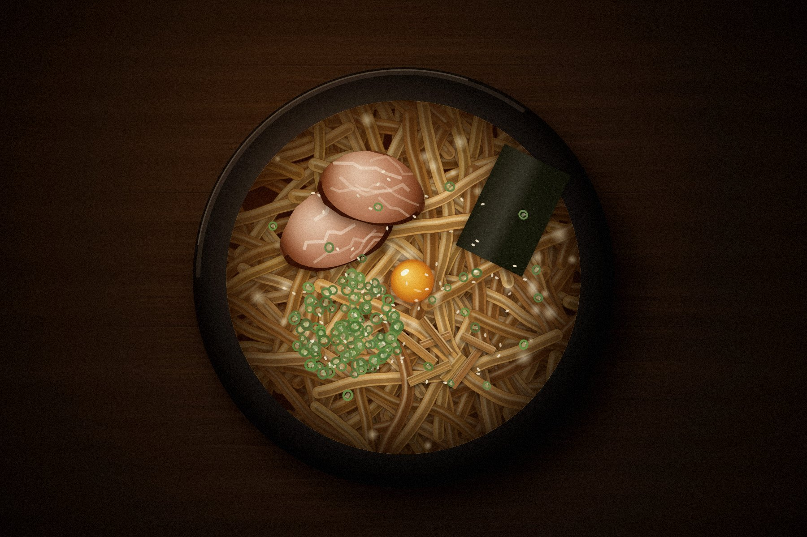

汁なし油そば11:00〜売り切れまで 水曜休み
遠藤油そば
親父の油そばを、
そのまま継ぎました。
タレの作り方、麺の茹で時間、丼に入れる順番。どれも親父に教わったとおりです。
メニューは油そばだけ。量は選べますが、味は選べません。そういう店です。
藍の暖簾が出ていれば、営業中です。
油そば、一品だけ
食券機
入口の左。価格はすべて税込です。食券現金・交通系IC
油そば 並200g950円
油そば 大300g950円
油そば 特400g1,100円
味玉タレ漬け150円
肉増しチャーシュー2枚300円
ネギ増し 100円
生玉子 80円
追い飯締めの小ライス100円
瓶ビール中瓶600円
烏龍茶 200円
千円札・五千円札・一万円札が使えます。
食べ方
親父がいつも客に言っていた順番です- 着丼したら
底から混ぜる
タレと脂は丼の底にあります。箸を底まで入れて、麺に色がつくまで十回以上返してください。
- 半分まで
何も足さない
まずはそのままで。親父の味はここで決まります。
- 半分から
酢とラー油
酢をひと回し、ラー油を三滴。入れすぎるとタレが負けます。
- 麺がなくなったら
追い飯
残ったタレに小ライスを入れて混ぜます。これで一杯が終わります。
同じものを、毎日出す
親父は口数の少ない人で、店でもほとんど喋りませんでした。麺を上げて、丼に盛って、置く。昼から夜まで、ずっとそれです。
一度だけ、今の流行りに合わせて味を変えたらどうかと言ったことがあります。親父は「客はこれを食いに来てる」とだけ言って、その日もいつもと同じタレを炊いていました。
店を継ぐときに教わったのは、配合よりも、毎朝タレを舐めて昨日と同じか確かめることでした。紙には何も書いてありません。舌で覚えるしかなかった。
なので、うちは新しいことはしません。限定もやりません。親父の油そばを、今日も同じように出します。
二代目 店主
- 継いだもの
- 元ダレ、寸胴一本、茹で時間 7分30秒
- 変えたもの
- 張り紙の字だけ
- やらないこと
- 限定麺、味の調整、二号店
「客はこれを食いに来てる」親父
昼から、売り切れまで
- 店名
- 油そば 遠藤
- 営業時間
- 11:00〜売り切れまで
金・土は夜 17:30〜20:30 も営業 - 定休日
- 水曜日
- 席
- カウンター 9席
- 支払い
- 食券機（現金・交通系IC）
- 所在地
- 住所を掲載予定
- 運営
- 株式会社もものまき
お客様へ
- 一、味のご注文は受けません
- 一、来たらすぐ底から混ぜる
- 一、半分過ぎたら酢とラー油
- 一、タレが無くなれば閉店
店主
売り切れはInstagramで
その日の売り切れや臨時休みは、Instagramに出します。遠くから来る方は、家を出る前に見てください。
Instagramを見る